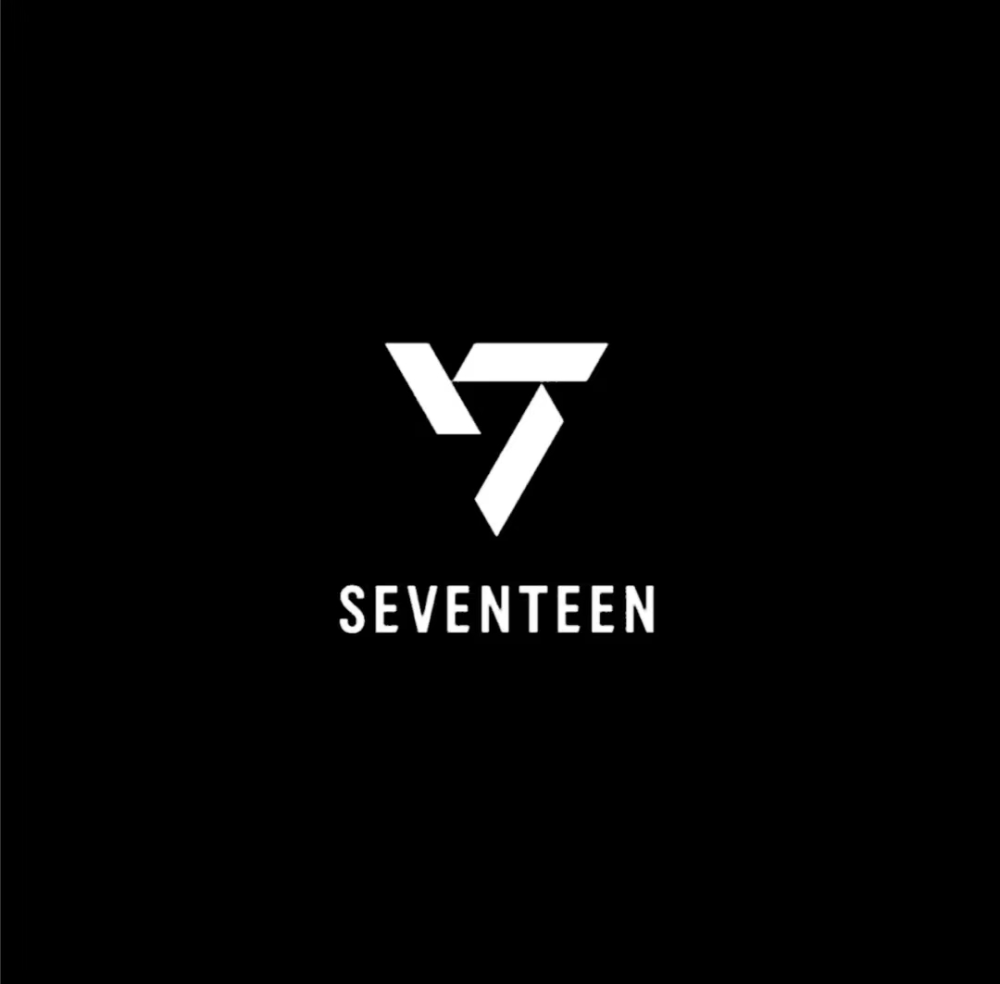

SEVENTEEN是一支由13名成员组成的韩国男子团体,他们以自己参与歌曲创作、制作和编舞而闻名,被称为“自制偶像”。他们于2015年5月26日以迷你专辑《17 Carat》和主打歌《Adore You》出道,属于Pledis Entertainment公司。他们的粉丝名叫Carat,官方颜色是Rose Quartz和Serenity。
SEVENTEEN的成员分为三个小分队,分别是hip-hop unit, vocal unit, 和 performance unit。每个小分队都有自己的专长和风格,但也能和其他小分队协作,形成一个完整的团体。他们的音乐风格涵盖了K-pop, synth-pop, hip hop, R&B, EDM等多种流派,展现了他们的多样性和创新性。他们的舞台表演也充满了活力和魅力,被媒体誉为“表演之王”、“K-pop剧场小孩”和“K-pop表演强者” 。
